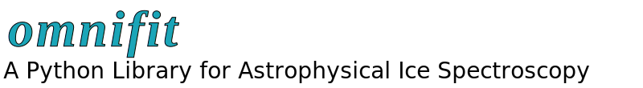
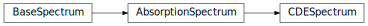

Omnifit Package Documentation¶
Welcome to the Omnifit documentation!
Reference/API¶
omnifit.spectrum Package¶
Classes¶
AbsorptionSpectrum(wn,od,**kwargs) |
A class specialized in representing absorption spectra of the type often used in ice spectroscopy. |
BaseSpectrum(x,y,dy=None,specname=,nondata=[]) |
A class to represent spectroscopic data. |
CDESpectrum(wn,n,k,**kwargs) |
A class specialized in representing CDE-corrected absorption spectra. |
Class Inheritance Diagram¶
